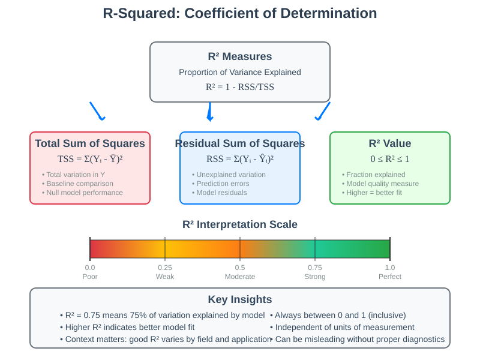
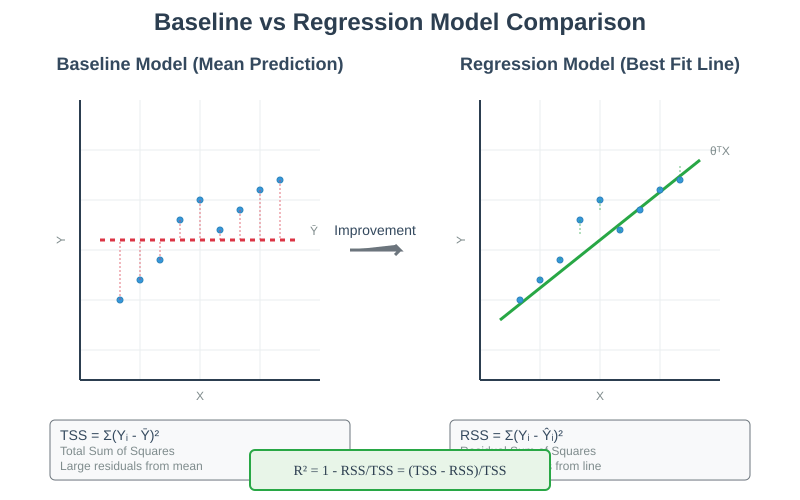
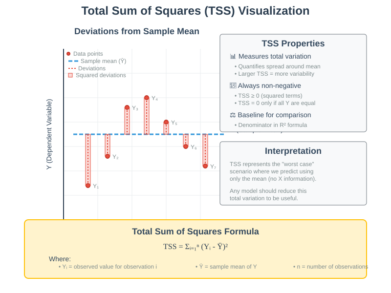
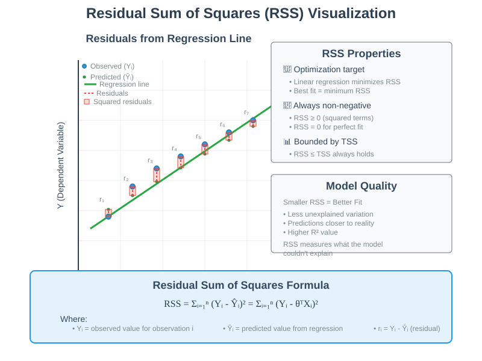
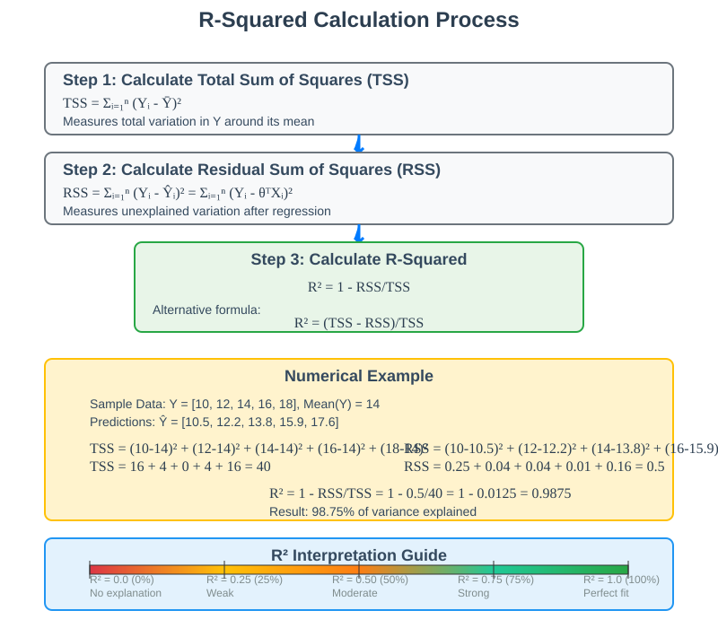
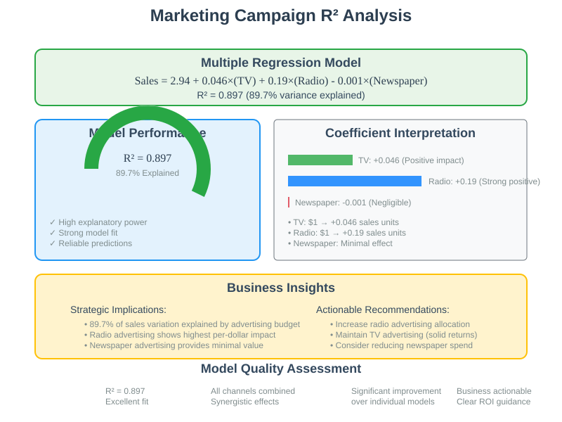
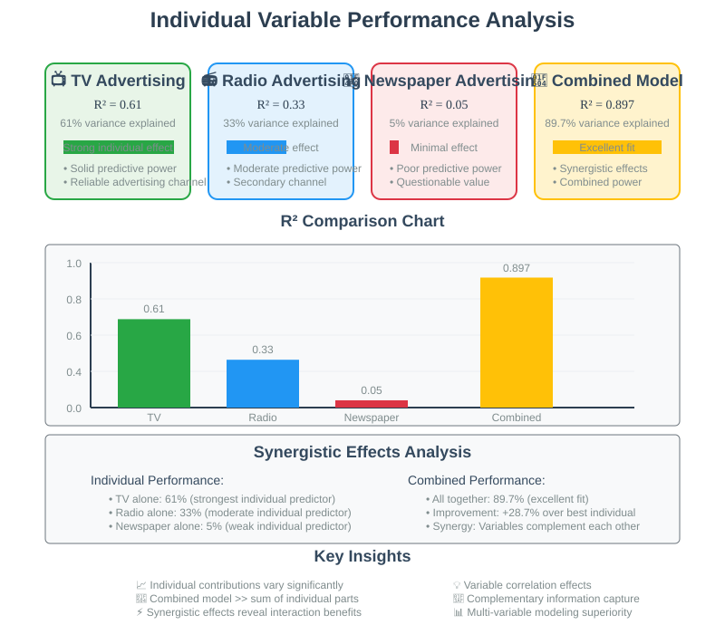

Linear Regression Performance Assessment: R-Squared
Quick Navigation
- Course Overview
- Performance Assessment Framework
- R-Squared Fundamentals
- Total Sum of Squares
- Residual Sum of Squares
- R-Squared Calculation and Interpretation
- Real-World Example Analysis
- Individual Variable Performance
- Adjusted R-Squared
- Performance Interpretation Guidelines
- Try It Yourself
- References & Further Reading
Course Overview
Performance assessment represents a critical phase in the machine learning pipeline, determining the reliability and effectiveness of trained models. This comprehensive guide explores R-squared (R²) as the primary metric for evaluating linear regression performance, providing both theoretical foundations and practical implementation strategies.
R-squared quantifies the proportion of variance in the dependent variable that is predictable from the independent variables, offering intuitive insights into model quality. Understanding R-squared enables practitioners to make informed decisions about model selection, feature engineering, and deployment strategies.

The assessment framework addresses three fundamental questions that every practitioner must answer: How much can we trust our predictions? What insights can we extract from our model? How accurate are our estimated parameters? These questions guide the entire performance evaluation process.
Performance Assessment Framework
🔵 Critical Questions for Model Evaluation
After training a linear regression model and obtaining parameter estimates, the performance assessment phase addresses several critical questions that determine model utility and reliability.
Trust and Reliability Assessment
The primary concern involves determining the confidence level we can place in model predictions. This encompasses both the accuracy of individual predictions and the consistency of performance across different data distributions.
Model Interpretability and Insights
Beyond prediction accuracy, models serve as tools for understanding underlying relationships between variables. The assessment framework evaluates how well the model captures true relationships and what insights can be extracted from the learned parameters.
Parameter Accuracy Evaluation
Understanding the precision of estimated parameters is crucial for applications requiring coefficient interpretation, such as scientific studies or policy analysis where parameter values carry substantive meaning.

Assessment Methodology
The systematic approach to performance evaluation involves multiple complementary metrics and diagnostic procedures:
- Goodness of fit measures: Quantifying how well the model explains observed data
- Residual analysis: Examining prediction errors for patterns and assumptions
- Cross-validation techniques: Assessing generalization performance
- Statistical inference: Determining parameter significance and confidence intervals
R-Squared Fundamentals
🟢 Conceptual Foundation
R-squared (R²) represents the coefficient of determination, measuring the proportion of variance in the dependent variable that is explained by the independent variables in the regression model. This metric provides an intuitive measure of model performance on a standardized scale.
Baseline Comparison Approach
R-squared derives its meaning through comparison with a baseline model that makes predictions without considering any independent variables. This baseline approach uses the mean of the dependent variable as the prediction for all observations.
Null Model Prediction
Without any regression analysis, the optimal prediction for a new observation is simply the sample mean:
Ŷ_null = (1/n) Σᵢ₌₁ⁿ Yᵢ = Ȳ
This constant prediction represents the best estimate when no information about independent variables is available.

Variance Decomposition
R-squared partitions the total variance in the dependent variable into explained and unexplained components, providing insight into how much of the observed variation the model successfully captures.
The decomposition follows the fundamental relationship:
Total Variance = Explained Variance + Unexplained Variance
This partition enables quantitative assessment of model performance relative to the simplest possible baseline.
Total Sum of Squares
🔴 Measuring Total Variation
The Total Sum of Squares (TSS) quantifies the total variation in the dependent variable around its mean, establishing the baseline against which model performance is measured.
Mathematical Definition
TSS = Σᵢ₌₁ⁿ (Yᵢ - Ȳ)²
Where: - Yᵢ represents the observed value for observation i - Ȳ denotes the sample mean of the dependent variable - n is the total number of observations

Interpretation and Significance
TSS represents the total amount of variation in the dependent variable that could potentially be explained by any model. It serves as the denominator in the R-squared calculation, providing the reference point for measuring improvement over the null model.
Key Properties
- Always non-negative: Squared deviations ensure TSS ≥ 0
- Scale dependent: TSS increases with the scale of the dependent variable
- Sample size dependent: Generally increases with larger sample sizes
- Baseline performance: Represents the worst-case scenario for model performance
Practical Implications
Understanding TSS helps practitioners interpret R-squared values in context. High TSS indicates substantial variation in the dependent variable, suggesting greater potential for meaningful predictions. Low TSS may indicate limited variation, potentially constraining the maximum achievable R-squared.
Residual Sum of Squares
🟡 Measuring Unexplained Variation
The Residual Sum of Squares (RSS) quantifies the amount of variation in the dependent variable that remains unexplained after fitting the regression model. RSS represents the prediction errors that persist despite the model's best efforts.
Mathematical Definition
RSS = Σᵢ₌₁ⁿ (Yᵢ - Ŷᵢ)² = Σᵢ₌₁ⁿ (Yᵢ - θᵀXᵢ)²
Where: - Yᵢ is the observed value for observation i - Ŷᵢ is the predicted value from the regression model - θᵀXᵢ represents the linear prediction for observation i

Relationship to Model Quality
RSS directly reflects model performance: smaller RSS values indicate better fit, as they represent less unexplained variation. The optimization process in linear regression specifically minimizes RSS, making it the natural measure of model quality.
Key Characteristics
- Optimization target: Linear regression minimizes RSS
- Always non-negative: RSS ≥ 0 due to squared terms
- Perfect fit condition: RSS = 0 when model perfectly fits data
- Bounded by TSS: RSS ≤ TSS always holds
Practical Considerations
Model Comparison
RSS enables direct comparison between models on the same dataset. Lower RSS indicates superior fit, though this must be balanced against model complexity to avoid overfitting.
Assumption Checking
Analyzing the pattern of residuals (Yᵢ - Ŷᵢ) helps verify model assumptions and identify potential improvements or violations of linear regression assumptions.
R-Squared Calculation and Interpretation
🟢 The Coefficient of Determination
R-squared represents the proportion of total variation explained by the regression model, calculated as the reduction in sum of squares relative to the total variation.
Mathematical Formula
R² = 1 - (RSS/TSS) = 1 - [Σᵢ₌₁ⁿ (Yᵢ - Ŷᵢ)²] / [Σᵢ₌₁ⁿ (Yᵢ - Ȳ)²]
Alternative formulation:
R² = (TSS - RSS) / TSS
This shows that R² measures the fraction of total variation that has been explained by the model.

Interpretation Framework
Range and Bounds
0 ≤ R² ≤ 1
- R² = 0: Model explains no variation; predictions equal the mean
- R² = 1: Model explains all variation; perfect fit
- Higher values: Indicate better explanatory power
Practical Meaning
R² answers the question: "What proportion of the observed variation in Y can be attributed to the linear relationship with X?"
For example: - R² = 0.75 means 75% of the variation is explained by the model - R² = 0.25 means 25% of the variation is explained; 75% remains unexplained
Mathematical Properties
Simple Regression Special Case
In simple linear regression (one independent variable), R² equals the square of the correlation coefficient between X and Y:
R² = ρ²(X,Y)
This relationship provides intuitive understanding: strong correlation implies high R².
Multiple Regression Considerations
In multiple regression, R² loses the direct correlation interpretation but retains its meaning as the proportion of explained variation.
Real-World Example Analysis
🔵 Marketing Campaign Dataset
The marketing example demonstrates R-squared interpretation using advertising expenditure data across three channels: TV, Radio, and Newspaper advertising, with sales as the dependent variable.
Multiple Regression Results
Sales = 2.94 + 0.046 × (TV) + 0.19 × (Radio) - 0.001 × (Newspaper)
R² = 0.897
This indicates that 89.7% of the variation in sales across different regions can be explained by the advertising budget allocation across the three channels.
Performance Interpretation
Strong Explanatory Power
With R² = 0.897, the model demonstrates strong explanatory power, suggesting that advertising budget is a primary driver of sales variation across regions.
Business Implications
- Strategic insight: Advertising budget explains nearly 90% of sales differences
- Predictive utility: Model provides reliable sales forecasts
- Resource allocation: Coefficient magnitudes guide optimal budget distribution

Model Validation Considerations
Goodness of Fit
The high R² suggests excellent fit, but practitioners must verify that this performance generalizes to new data and doesn't represent overfitting.
Assumption Verification
High R² doesn't guarantee model validity; residual analysis and assumption checking remain essential for reliable inference.
Individual Variable Performance
🟡 Single Variable Analysis
Analyzing individual variables provides insights into each predictor's contribution and helps understand the synergistic effects of multiple variables.
TV Advertising Alone
R² = 0.61
TV advertising explains 61% of sales variation when used as the sole predictor, demonstrating substantial individual explanatory power.
Radio Advertising Alone
R² = 0.33
Radio advertising explains 33% of sales variation independently, showing moderate individual contribution.
Newspaper Advertising Alone
Sales = 12.35 + 0.055 × (Newspaper)
R² = 0.05
Newspaper advertising explains only 5% of sales variation, indicating minimal individual predictive power.
Synergistic Effects
Combined Performance
When all three variables are used together, R² = 0.897, substantially higher than any individual variable. This demonstrates synergistic effects where the combination provides greater explanatory power than the sum of individual contributions.
Variable Interaction
The dramatic improvement from individual to combined models suggests that: - Variables may be correlated with each other - Combined information captures complementary aspects of sales drivers - Individual variable assessments may underestimate true importance

Practical Implications
Feature Selection
Individual R² values guide feature selection decisions, but the synergistic effects highlight the importance of considering variable combinations.
Resource Allocation
Understanding individual contributions helps prioritize data collection and model development efforts while recognizing interaction effects.
Adjusted R-Squared
🔴 Accounting for Model Complexity
Adjusted R-squared modifies the standard R² calculation to account for the number of predictors in the model, providing a penalty for model complexity.
Mathematical Formula
Adjusted R² = 1 - [RSS/(n-m-1)] / [TSS/(n-1)]
Where: - n = number of observations - m = number of independent variables - RSS = Residual Sum of Squares - TSS = Total Sum of Squares
Alternative formulation:
Adjusted R² = 1 - (1-R²) × [(n-1)/(n-m-1)]

Rationale and Purpose
Overfitting Prevention
Standard R² always increases (or stays constant) when additional variables are added, regardless of their true predictive value. Adjusted R² can decrease when uninformative variables are added, discouraging overfitting.
Model Comparison
Adjusted R² enables fair comparison between models with different numbers of parameters, as it penalizes unnecessary complexity.
Practical Application
Example Calculation
In the marketing example: - Original R² = 0.897 - Adjusted R² = 0.896 - Minimal difference due to large n relative to m
When Adjustments Matter
The adjustment becomes more significant when: - Sample size (n) is small relative to the number of parameters (m) - Many variables are included in the model - Model selection involves comparing different numbers of predictors
Interpretation Guidelines
Small Differences
When n >> m (sample size much larger than number of variables), adjusted R² ≈ R², and the adjustment makes little practical difference.
Substantial Differences
When the adjustment is large, it signals potential overfitting concerns and suggests that some variables may not be contributing meaningful explanatory power.
Performance Interpretation Guidelines
🟢 Best Practices for R-Squared Analysis
Effective interpretation of R-squared requires understanding its limitations, contextual factors, and appropriate application scenarios.
Contextual Interpretation
Domain-Specific Expectations
- Physical sciences: R² > 0.95 often expected due to well-understood relationships
- Social sciences: R² > 0.30 may be considered good due to inherent variability
- Financial markets: R² > 0.10 can be valuable due to market complexity
- Medical research: Standards vary by application and measurement precision
Sample Size Considerations
- Large samples: Small improvements in R² may be statistically significant
- Small samples: High R² may be misleading due to overfitting risk
- Cross-validation: Essential for validating R² in smaller datasets
Common Pitfalls and Limitations
High R² Doesn't Guarantee Causation
Strong correlation (high R²) doesn't imply causal relationships. Additional evidence and theoretical justification are required for causal claims.
Model Assumption Violations
High R² can coexist with serious assumption violations that invalidate statistical inference. Residual analysis remains essential regardless of R² value.
Overfitting Risks
Perfect or near-perfect R² (approaching 1.0) may indicate overfitting, especially with limited data or many variables.
Advanced Interpretation Techniques
Incremental R² Analysis
Examining how R² changes as variables are added helps identify the most valuable predictors and detect diminishing returns.
Cross-Validated R²
Out-of-sample R² provides more realistic performance estimates and helps detect overfitting.
Comparison with Baseline Models
Comparing R² against relevant baselines (seasonal models, industry standards) provides better context than absolute values.
Try It Yourself
🔧 Hands-On R-Squared Analysis
R-Squared Calculation Implementation
👉 Basic R-Squared Calculator

import numpy as np
import matplotlib.pyplot as plt
from sklearn.linear_model import LinearRegression
from sklearn.metrics import r2_score
import pandas as pd
def calculate_r_squared_components(y_true, y_pred):
"""
Calculate R-squared and its components for educational purposes
"""
# Calculate means
y_mean = np.mean(y_true)
# Total Sum of Squares (TSS)
tss = np.sum((y_true - y_mean)**2)
# Residual Sum of Squares (RSS)
rss = np.sum((y_true - y_pred)**2)
# R-squared calculation
r_squared = 1 - (rss / tss)
# Alternative calculation
r_squared_alt = (tss - rss) / tss
print(f"Total Sum of Squares (TSS): {tss:.3f}")
print(f"Residual Sum of Squares (RSS): {rss:.3f}")
print(f"R-squared: {r_squared:.3f}")
print(f"Percentage of variance explained: {r_squared*100:.1f}%")
return tss, rss, r_squared
# Example with synthetic data
np.random.seed(42)
X = np.random.randn(100, 1)
y = 3 + 2*X.ravel() + np.random.randn(100)*0.5
# Fit linear regression
model = LinearRegression()
model.fit(X, y)
y_pred = model.predict(X)
# Calculate R-squared components
tss, rss, r2 = calculate_r_squared_components(y, y_pred)
# Verify with sklearn
r2_sklearn = r2_score(y, y_pred)
print(f"Sklearn R-squared: {r2_sklearn:.3f}")
Marketing Data Analysis
👉 Complete Marketing Campaign Analysis

import pandas as pd
import numpy as np
from sklearn.linear_model import LinearRegression
from sklearn.metrics import r2_score
import matplotlib.pyplot as plt
import seaborn as sns
# Load marketing data (simulated based on lesson example)
def create_marketing_data():
np.random.seed(42)
n = 200
# Generate correlated advertising data
tv = np.random.uniform(0, 300, n)
radio = np.random.uniform(0, 50, n)
newspaper = np.random.uniform(0, 100, n)
# Generate sales with known relationship
sales = (2.94 + 0.046*tv + 0.19*radio - 0.001*newspaper +
np.random.normal(0, 1, n))
return pd.DataFrame({
'TV': tv,
'Radio': radio,
'Newspaper': newspaper,
'Sales': sales
})
# Analyze individual and combined performance
def analyze_variable_performance(data):
X_columns = ['TV', 'Radio', 'Newspaper']
y = data['Sales']
results = {}
# Individual variable analysis
for col in X_columns:
X = data[[col]]
model = LinearRegression()
model.fit(X, y)
y_pred = model.predict(X)
r2 = r2_score(y, y_pred)
results[f'{col}_R2'] = r2
print(f"{col} alone - R²: {r2:.3f}")
# Combined analysis
X_combined = data[X_columns]
model_combined = LinearRegression()
model_combined.fit(X_combined, y)
y_pred_combined = model_combined.predict(X_combined)
r2_combined = r2_score(y, y_pred_combined)
results['Combined_R2'] = r2_combined
print(f"\nCombined model - R²: {r2_combined:.3f}")
print(f"Improvement over best individual: {r2_combined - max(results['TV_R2'], results['Radio_R2'], results['Newspaper_R2']):.3f}")
return results
# Run analysis
data = create_marketing_data()
results = analyze_variable_performance(data)
Advanced R-Squared Diagnostics
👉 R-Squared Diagnostic Tools

def adjusted_r_squared(r2, n, m):
"""
Calculate adjusted R-squared
Args:
r2: Regular R-squared value
n: Number of observations
m: Number of independent variables
"""
adjusted = 1 - (1 - r2) * (n - 1) / (n - m - 1)
return adjusted
def r_squared_diagnostics(X, y, model_name="Model"):
"""
Comprehensive R-squared analysis with diagnostics
"""
n, m = X.shape
# Fit model
model = LinearRegression()
model.fit(X, y)
y_pred = model.predict(X)
# Calculate metrics
r2 = r2_score(y, y_pred)
adj_r2 = adjusted_r_squared(r2, n, m)
# Calculate components
y_mean = np.mean(y)
tss = np.sum((y - y_mean)**2)
rss = np.sum((y - y_pred)**2)
print(f"\n{model_name} Diagnostics:")
print(f"Sample size (n): {n}")
print(f"Number of features (m): {m}")
print(f"R-squared: {r2:.4f}")
print(f"Adjusted R-squared: {adj_r2:.4f}")
print(f"Difference: {r2 - adj_r2:.4f}")
print(f"Total Sum of Squares: {tss:.2f}")
print(f"Residual Sum of Squares: {rss:.2f}")
print(f"Explained Sum of Squares: {tss - rss:.2f}")
return {
'r2': r2,
'adj_r2': adj_r2,
'tss': tss,
'rss': rss,
'n': n,
'm': m
}
# Example usage with marketing data
data = create_marketing_data()
X = data[['TV', 'Radio', 'Newspaper']]
y = data['Sales']
diagnostics = r_squared_diagnostics(X, y, "Marketing Model")
Hugging Face Integration
Explore regression datasets and model implementations: - Regression Datasets Hub - Scikit-learn Models Collection - Linear Regression Implementations
References & Further Reading
📚 Essential Resources
Statistical Theory and Foundations
- Montgomery, D.C., Peck, E.A., Vining, G.G. (2012): "Introduction to Linear Regression Analysis, 5th Edition" - Comprehensive treatment of R-squared and model assessment
- Kutner, M.H., Nachtsheim, C.J., Neter, J., Li, W. (2004): "Applied Linear Statistical Models" - Classical reference for regression diagnostics
- Draper, N.R., Smith, H. (1998): "Applied Regression Analysis, 3rd Edition" - Detailed coverage of goodness-of-fit measures
Performance Metrics and Model Selection
- Hastie, T., Tibshirani, R., Friedman, J. (2009): "The Elements of Statistical Learning" - Chapter 7 on model assessment and selection
- James, G., Witten, D., Hastie, T., Tibshirani, R. (2013): "An Introduction to Statistical Learning" - Accessible treatment of R-squared interpretation
- Burnham, K.P., Anderson, D.R. (2002): "Model Selection and Multimodel Inference" - Information-theoretic approaches to model comparison
Industry Documentation and Implementation
- Scikit-learn Regression Metrics - Comprehensive guide to implementation and interpretation
- NumPy Statistical Functions - Computational tools for statistical analysis
- Pandas Statistical Analysis - Data manipulation and basic statistics
Advanced Topics and Extensions
- Cross-Validation for R-squared: Techniques for out-of-sample performance assessment
- Bayesian R-squared: Posterior distributions for uncertainty quantification
- Robust Regression Metrics: Alternatives to R-squared for outlier-resistant analysis
- Information Criteria: AIC, BIC, and other model selection criteria beyond R-squared
Research Applications
- Google AI Research: Statistical Methods - Modern approaches to model evaluation
- Microsoft Research: Regression Analysis - Large-scale regression applications
- Meta AI Research: Performance Metrics - Industry perspectives on model assessment
Interactive Learning Resources
- Kaggle Learn: Model Validation - Practical model assessment techniques
- Coursera Regression Courses - University-level courses on regression analysis
- edX Statistics Courses - Statistical foundations for model assessment